Campos y widgets¶
Los campos dan estructura a los modelos de una base de datos. Imagine que un modelo es una tabla o una hoja de cálculo, los campos son las columnas donde los datos se almacenan en los registros (por ejemplo, filas). Los campos también definen el tipo de datos que se almacenan en ellos. Sus widgets son los que definen cómo se presentan y se da formato a los datos en la interfaz de usuario.
Desde un punto de vista técnico, hay 15 tipos de campos en Odoo. Sin embargo, puede elegir entre 20 campos en Studio, pues algunos tipos de campos están disponibles más de una vez con un widget predeterminado distinto.
Truco
Solo puede agregar nuevos campos en las vistas de Formulario y Lista. En otras vistas, solo puede agregar campos existentes (campos que ya existen en el modelo).
Campos simples¶
Los campos simples contienen valores básicos, como texto, números, archivos, etc.
Nota
Algunas veces puede seleccionar widgets no predeterminados, estos aparecen como viñetas a continuación.
Texto (char)¶
El campo de Texto se utiliza para textos cortos que incluyen cualquier carácter. Aparece una línea de texto cuando se completa el campo.
Insignia: muestra el valor dentro de una forma redonda, similar a una etiqueta. El valor no se puede editar en la interfaz de usuario, pero puede establecer un valor predeterminado.
Copiar al portapapeles: los usuarios pueden copiar el valor al hacer clic en un botón.
Correo electrónico: el valor se convierte en un enlace mailto en el que se puede hacer clic.
Imagen: muestra una imagen que utiliza una URL. El valor no se puede editar de forma manual, pero se puede establecer un valor predeterminado.
Nota
Esto funciona de forma diferente a seleccionar el campo de Imagen directamente, ya que la imagen no se almacena en Odoo cuando se utiliza un campo de Texto con el widget de Imagen. Por ejemplo, puede ser útil si desea ahorrar espacio de memoria.
Teléfono: el valor se convierte en un enlace tel en el que se puede hacer clic.
Truco
Seleccione Habilitar SMS para agregar la opción de enviar un SMS desde Odoo junto al campo.
URL: el valor se convierte en una URL en la que se puede hacer clic.
Example
Texto multilínea (text)¶
El campo de Texto multilínea se utiliza para textos más largos que contienen cualquier tipo de carácter. Aparecen dos líneas de texto en la interfaz de usuario cuando se completa el campo.
Copiar al portapapeles: los usuarios pueden copiar el valor al hacer clic en un botón.
Example
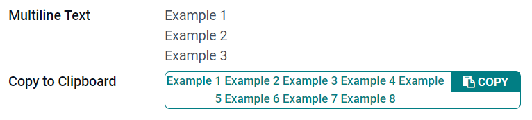Entero (integer)¶
El campo entero se utiliza para todos los números enteros (positivos, negativos o cero, sin decimales).
Círculo de porcentaje: muestra el valor en un círculo de porcentaje, por lo general para valores calculados. El valor no se puede editar en la interfaz de usuario, pero puede establecer un valor predeterminado.
Barra de progreso: muestra el valor junto a una barra de porcentaje, por lo general para valores calculados. El campo no se puede editar de forma manual, pero puede establecer un valor predeterminado.
Manija: muestra un icono de manija para ordenar registros de forma manual en la vista de lista.
Example
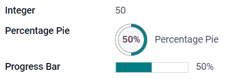Decimal (float)¶
El campo de decimal se utiliza para números decimales (positivos, negativos o cero, con decimales).
Nota
Los números decimales se muestran en la interfaz de usuario con dos decimales después del punto, pero se almacenan en la base de datos con mayor precisión.
Monetario: es similar a usar el campo monetario. Le recomendamos utilizar este último, ya que ofrece más funciones.
Porcentaje: muestra un carácter de porcentaje
%después del porcentaje.Porcentaje circular: muestra el valor dentro de un porcentaje circular, por lo general para valores calculados. El campo no se puede editar de forma manual, pero puede establecer un valor predeterminado.
Barra de progreso: muestra el valor junto a una barra de porcentaje, por lo general para valores calculados. El campo no se puede editar de forma manual, pero puede establecer un valor predeterminado.
Tiempo: el valor debe seguir el formato hh:mm con un máximo de 59 minutos.
Example
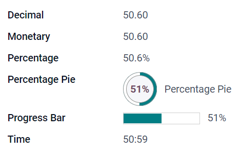Monetario (monetary)¶
El campo Monetario se utiliza para todos los valores monetarios.
Nota
Cuando agrega por primera vez un campo Monetario, se le invita a agregar un campo de Divisa si no existe ninguno en el modelo. Odoo le ofrece agregar el campo de Divisa por usted. Una vez agregado, agregue el campo Monetario otra vez.
Example
Html (html)¶
El campo Html se utiliza para agregar texto que se puede editar mediante el editor HTML de Odoo.
Texto multilínea: deshabilita el editor HTML de Odoo para permitir editar el HTML sin procesar.
Example
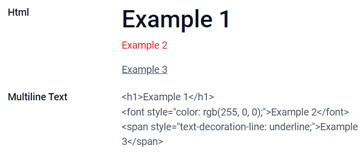Fecha (date)¶
El campo Fecha se usa para seleccionar una fecha en el calendario.
Días restantes: el número de días que faltan para que se muestre la fecha seleccionada (por ejemplo, en 5 días), según la fecha actual.
Example
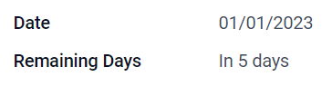Fecha y hora (datetime)¶
El campo Fecha y hora se utiliza para seleccionar una fecha en el calendario y una hora en un reloj. Si no se establece ninguna hora, se utilizará la hora actual del usuario.
Fecha: se utiliza para registrar la hora sin mostrarla en la interfaz de usuario.
Días restantes: muestra el número de días que faltan para que se muestre la fecha seleccionada (por ejemplo, en 5 días), según la fecha y hora actual.
Example
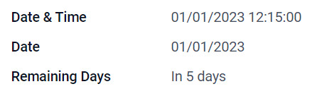Casilla de verificación (boolean)¶
El campo Casilla de verificación se utiliza cuando un valor solo puede ser verdadero o falso, y se indica al marcar o desmarcar una casilla de verificación.
Botón: muestra un botón de opción. El widget funciona sin tener que cambiar al modo de edición.
Activar: muestra un botón de activación. El widget funciona sin tener que cambiar al modo de edición.
Example
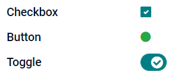Seleccionar (selection)¶
El campo Selección se utiliza cuando los usuarios deben seleccionar un valor único de un grupo de valores predefinidos.
Insignia: muestra el valor dentro de una forma redonda, similar a una etiqueta. El valor no se puede editar en la interfaz de usuario, pero puede establecer un valor predeterminado.
Insignias: muestra todos los valores seleccionables dentro de formas rectangulares, organizadas de manera horizontal.
Prioridad: muestra símbolos de estrellas en lugar de valores y se utilizan para indicar un nivel de importancia o de satisfacción. Tiene el mismo efecto que seleccionar el Campo de prioridad, aunque, para este último, ya hay cuatro valores de prioridad predefinidos.
Radio: muestra todos los valores seleccionables como los botones de opción.
Truco
Los botones de opción se organizan verticalmente de forma predeterminada. Marque mostrar horizontalmente para cambiar la forma en que se muestran.
Example
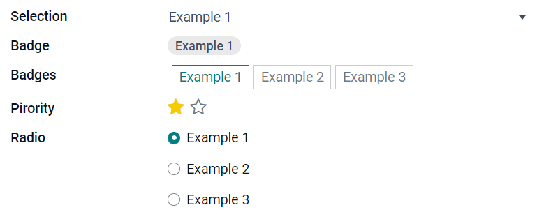Prioridad (selection)¶
El campo Prioridad se utiliza para mostrar un sistema de clasificación de tres estrellas, que se puede utilizar para indicar la importancia o el nivel de satisfacción. Este tipo de campo es un Campo de selección con el widget Prioridad seleccionado de forma predeterminada y cuatro valores de prioridad predefinidos. Por lo tanto, los widgets Insignia, Insignias, Radio y Selección tienen los mismos propósitos que los descritos en Selección.
Truco
Para cambiar el número de estrellas disponibles al agregar o eliminar valores, haga clic en Editar valores. Tenga en cuenta que el primer valor es igual a 0 estrellas (es decir, cuando no se selecciona ninguna estrella), por lo que tener cuatro valores da como resultado un sistema de clasificación de tres estrellas.
Example
Archivo (binary)¶
El campo Archivo se utiliza para subir cualquier tipo de archivo, o para firmar un formulario (widget Firmar).
Imagen: los usuarios pueden subir un archivo de imagen que se mostrará en la vista de Formulario. Esto tiene el mismo propósito que usar el campo Imagen`.
Lector de PDF: los usuarios pueden subir un archivo PDF, que puede ver desde la Vista de formulario.
Firmar: los usuarios pueden firmar el formulario de forma electrónica. Esto tiene el mismo resultado que si se selecciona el campo Firmar.
Example
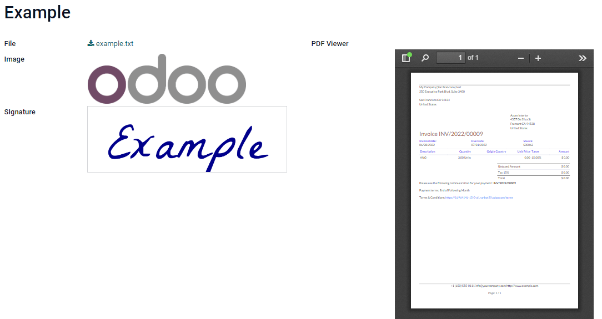Imagen (binary)¶
El campo Imagen se utiliza para subir una imagen y mostrarla en la Vista de formulario. Este tipo de campo es un Campo de archivo que cuenta con el widget Imagen seleccionado de forma predeterminada. Por lo tanto, los widgets Archivo, Lector PDF y Firma tienen los mismos propósitos que los descritos en Archivo.
Truco
Para cambiar el tamaño de visualización de las imágenes subidas, seleccione Pequeño, Medio o Grande en la opción Tamaño.
Firmar (binary)¶
El campo Firmar se utiliza para firmar el formulario de forma electrónica. Este tipo de campo es un Campo de archivo con el widget Firma seleccionado de forma predeterminada. Por lo tanto, los widgets Archivo, Imagen y Lector PDF tienen los mismos propósitos que los descritos en Archivo.
Truco
Para dar a los usuarios la opción de Autocompletar cuando tengan que trazar su firma, seleccione uno de los campos disponibles de Autocompletar con (Texto, Many2One, y Campo de relación únicamente en el modelo). La firma se generará automáticamente utilizando los datos del campo seleccionado.
Campos de relación¶
Los campos de relación se utilizan para vincular y mostrar los datos de los registros de otro modelo.
Nota
Algunas veces puede seleccionar widgets no predeterminados, estos aparecen como viñetas a continuación.
Many2One (many2one)¶
El campo Many2One se utiliza para vincular otro registro (de otro modelo) al registro que se está editando. Por lo tanto, se mostrará el nombre del registro del otro modelo en el registro que se está editando.
Example
En el modelo Orden de venta, el campo Cliente es un campo Many2One que dirige al modelo Contacto. Esto permite vincular varias órdenes de venta a un contacto (cliente).
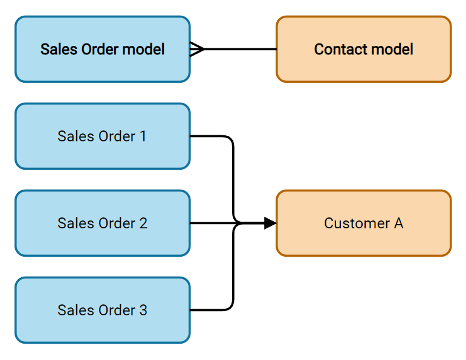Truco
Para evitar que los usuarios creen un nuevo registro en el modelo vinculado, marque Desactivar creación.
Para evitar que los usuarios abran los registros en una ventana emergente, marque Desactivar apertura.
Para ayudar a los usuarios a seleccionar únicamente el registro correcto, haga clic en Dominio para crear un filtro.
Insignia: muestra el valor dentro de una forma redonda, similar a una etiqueta, y no se puede editar en la interfaz del usuario.
Radio: muestra todos los valores seleccionables como los botones de opción.
One2Many (one2many)¶
El campo One2Many se usa para mostrar las relaciones existentes entre un registro del modelo actual y varios registros de otro modelo.
Example
Podría añadir un campo One2Many en el modelo Contacto para ver varias órdenes de venta de un cliente.
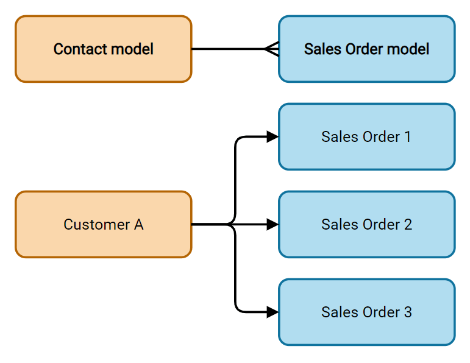Nota
Para utilizar un campo One2Many, es necesario que se hayan vinculado dos modelos utilizando un campo Many2One. Las relaciones One2Many no existen de forma independiente: se realiza una búsqueda inversa de las relaciones Many2One existentes.
Líneas (one2many)¶
El campo Líneas se utiliza para crear una tabla con filas y columnas (por ejemplo, las líneas de productos de una orden de venta).
Truco
Para modificar las columnas, haga clic en el campo Líneas y luego en Editar vista de lista. Haga clic en Editar vista de formulario para editar el formulario que aparece cuando un usuario hace clic en Agregar una línea.
Example
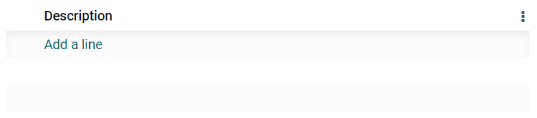Many2Many (many2many)¶
El campo Many2Many se utiliza para vincular varios registros de otro modelo con varios registros del modelo actual. Los campos Many2Many pueden utilizar Desactivar creación, Desactivar apertura, Dominio, al igual que los campos Many2One.
Example
En el modelo Tarea, el campo Asignados es un campo Many2Many que apunta al modelo Contacto. Esto permite que un solo usuario pueda estar asignado a muchas tareas y que muchos usuarios estén asignados a una sola tarea.
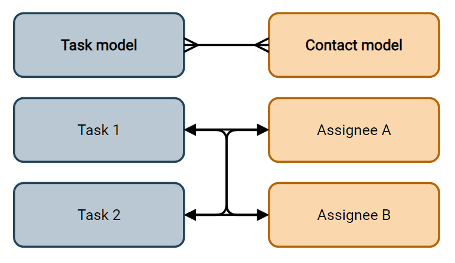Casillas de verificación: los usuarios pueden seleccionar varios valores utilizando las casillas de verificación.
Etiquetas: los usuarios pueden seleccionar varios valores en forma circular, también conocidos como etiquetas. Esto tiene el mismo resultado que si se selecciona el Campo de etiquetas.
Propiedades¶
Invisible: Cuando no es necesario que los usuarios vean un campo en la interfaz del usuario, marque Invisible. Esta opción permite despejar la interfaz, de manera que solo se muestren los campos necesarios según la situación.
Example
En la vista Formulario del modelo Contacto, el campo Título solo aparece cuando se selecciona una Persona física, ya que ese campo no sería útil para un contacto tipo Empresa.
Nota
El atributo Invisible también funciona en Studio. Para ver los campos ocultos dentro de Studio, haga clic en la pestaña Vista de una vista y seleccione Mostrar elementos invisibles.
Obligatorio: Si es necesario que el usuario complete un campo antes de poder continuar, seleccione Obligatorio.
Solo lectura: Si los usuarios no deberán ser capaces de modificar un campo, seleccione Solo lectura.
Nota
Si desea aplicar estas tres características a registros específicos, haga clic en Condicional y cree un filtro.
Etiqueta: Etiqueta es el nombre del campo en la interfaz del usuario.
Nota
No es el mismo nombre que se utiliza en la base de datos PostgreSQL. Si desea verlo o cambiarlo, active el Modo de desarrollador y edite el Nombre técnico.
Información de ayuda: Si desea describir la función de un campo, escriba una descripción en Información de ayuda. Se mostrará dentro de un cuadro de información sobre herramientas al pasar el ratón por encima de la etiqueta del campo.
Marcador de posición: Si desea mostrar un ejemplo de cómo debe completarse un campo, escríbalo en Marcador de posición. Se mostrará en color gris claro en lugar del valor del campo.
Widget: Si desea cambiar la apariencia o función predeterminada de un campo, seleccione uno de los widgets disponibles.
Valor predeterminado: Si desea añadir un valor predeterminado a un campo al crear un registro, utilice Valor predeterminado.
Limitar la visibilidad a grupos: Si desea limitar los usuarios que pueden ver el campo, seleccione un grupo de acceso de usuarios.